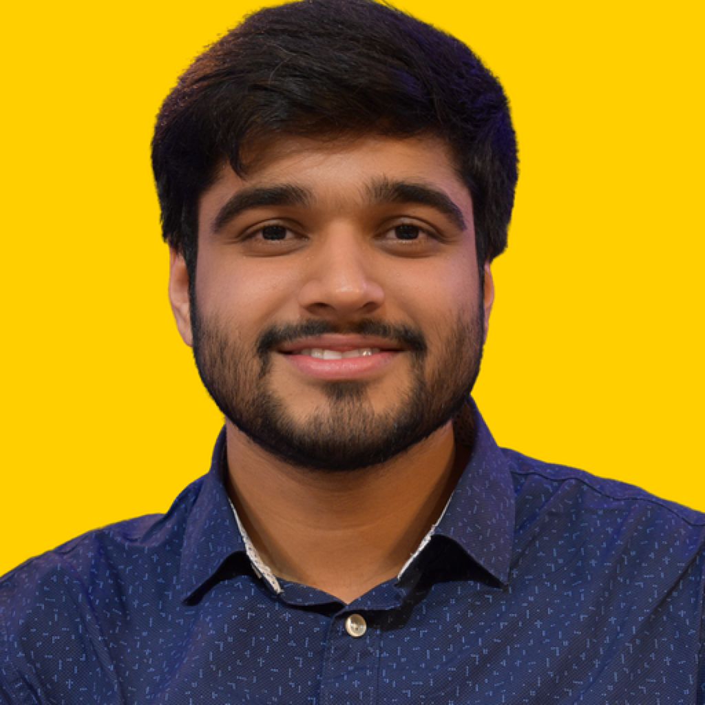
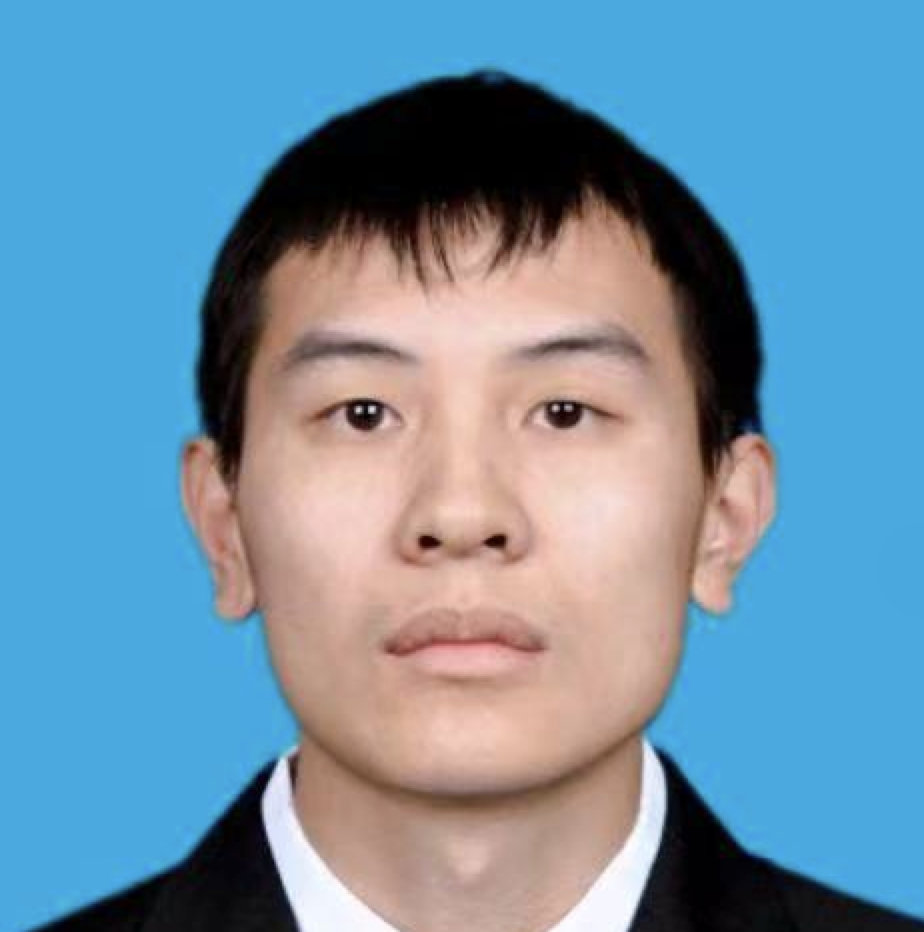
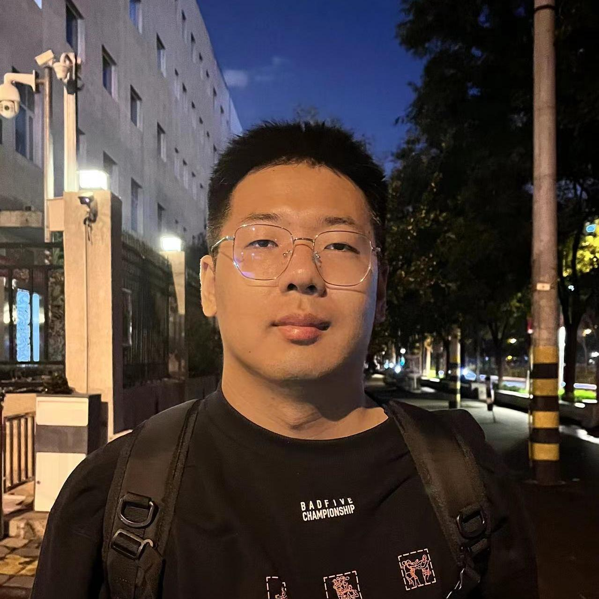
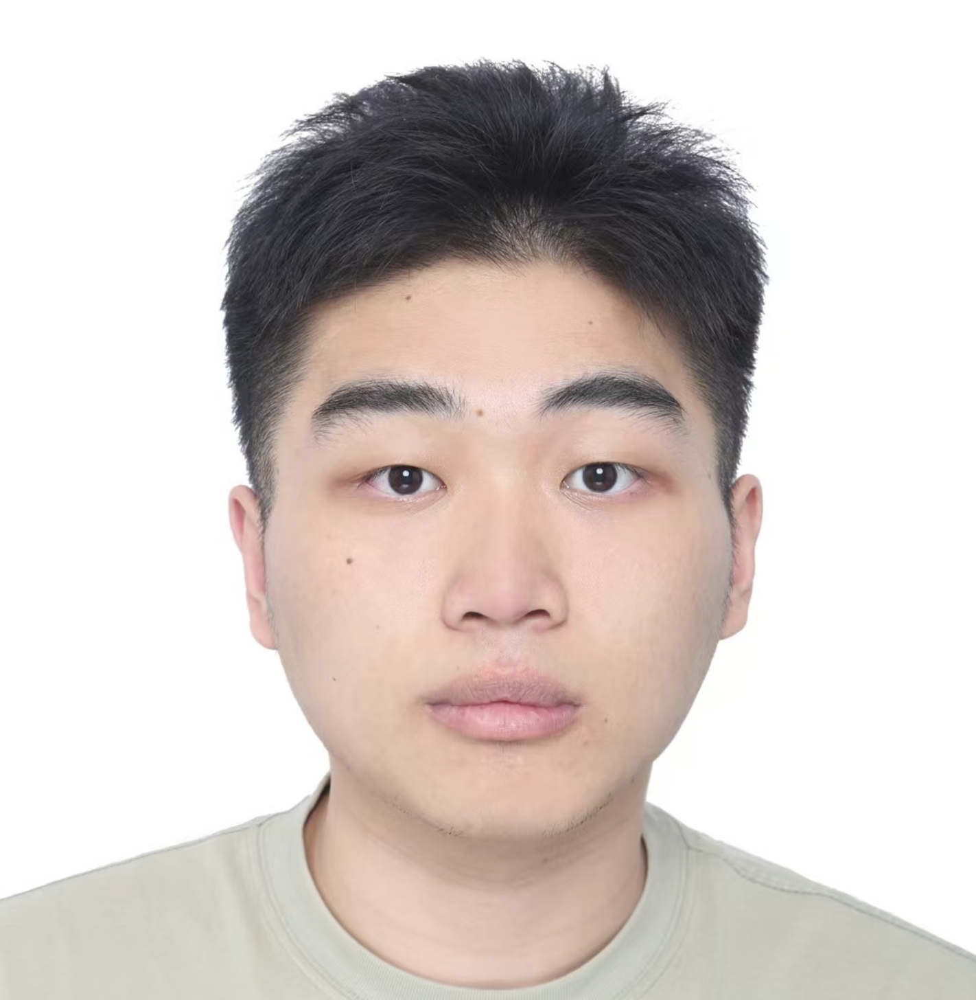

A research group exploring the intersection of affective computing, social robotics, and cognitive science — building toward a human-agent symbiotic society.
首先感谢你对HACI小组的关注。我们欢迎计算机、电子、心理学、教育学等不同领域的本科生、硕士、博士合作伙伴。我们会尽力打造一个融洽、互助、充满新鲜感的学习科研环境。
Thank you for your interest in the HACI team. We welcome undergraduate, master's, and doctoral partners from computer science, electronics, psychology, and education. We do our best to create a harmonious, supportive, and exciting research environment.
"探索的过程都是充满困难的，请各位伙伴们保持主动，迎难而上，享受突破困难的那一瞬间，肾上腺素给你带来的兴奋和喜悦感！"
The process of exploration is full of difficulty. Be proactive, face challenges, and enjoy the moment you break through — the rush of adrenaline is the reward.
We mainly focus on Affecitive+ research topics through deep learning. Unlike traditional approaches, we combine cognitive science, psychology, robotics, and AI from theoretical to applied levels.
Affective computing makes interaction between humans and machines more natural and intuitive. Emotionally intelligent machines detect and respond to the user's emotional state — making the experience personalized and engaging.
AI systems that help clinicians monitor emotional states and develop personalized treatment plans. Providing real-time feedback and support for individuals with mental health conditions.
We design robots that embody warmth and sociability — sharing experiences, expressing emotions through movement and voice, and building genuine social connectedness with humans.
Assessing speech, visual, and text information together to understand human behavior, with graph neural networks and transformers as our primary deep learning tools.
A collaborative environment connecting students and leading research institutions.




Complete all three preworks, summarize Prework 2 & 3 into a 500-word essay, and submit to us. We will share learning materials and kickstart your research journey!
Go through the publication list and read papers that interest you. Conduct a survey on affective computing, human-robot/agent interaction, and cognitive science to build foundational knowledge.
Imagine a scenario in a future society where human-machine symbiosis is prevalent. Propose a technology application related to emotions in that world.
For your proposed scenario from Prework 2, identify and specify the technologies required to make it a reality. Be as concrete and technically grounded as possible.
You likely share our interests. Summarize Prework 2 & 3 into a 500-word essay and send it to us!